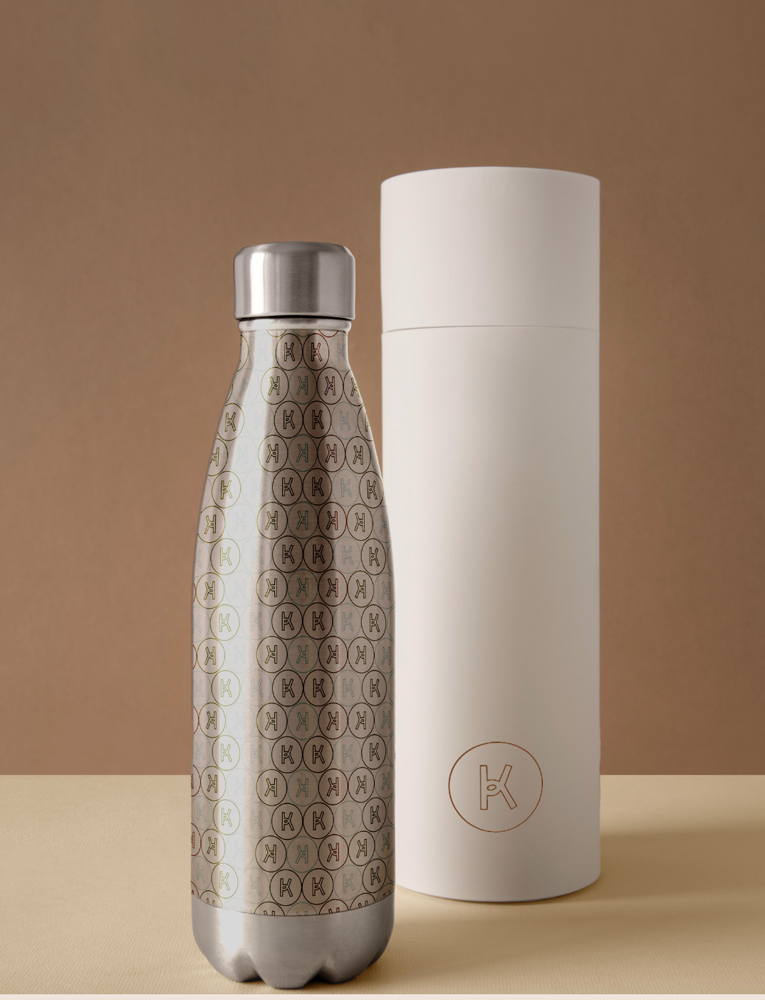
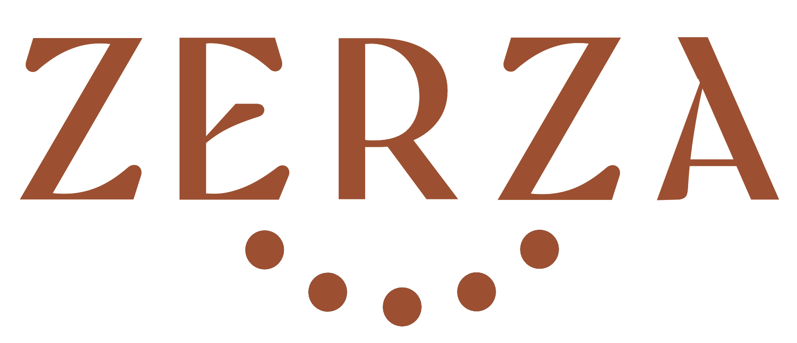
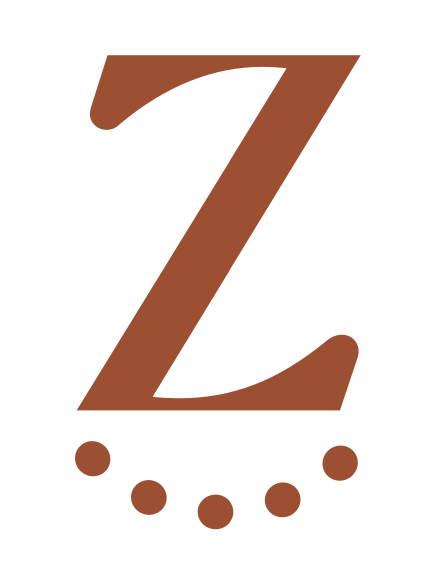
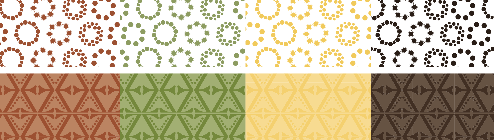
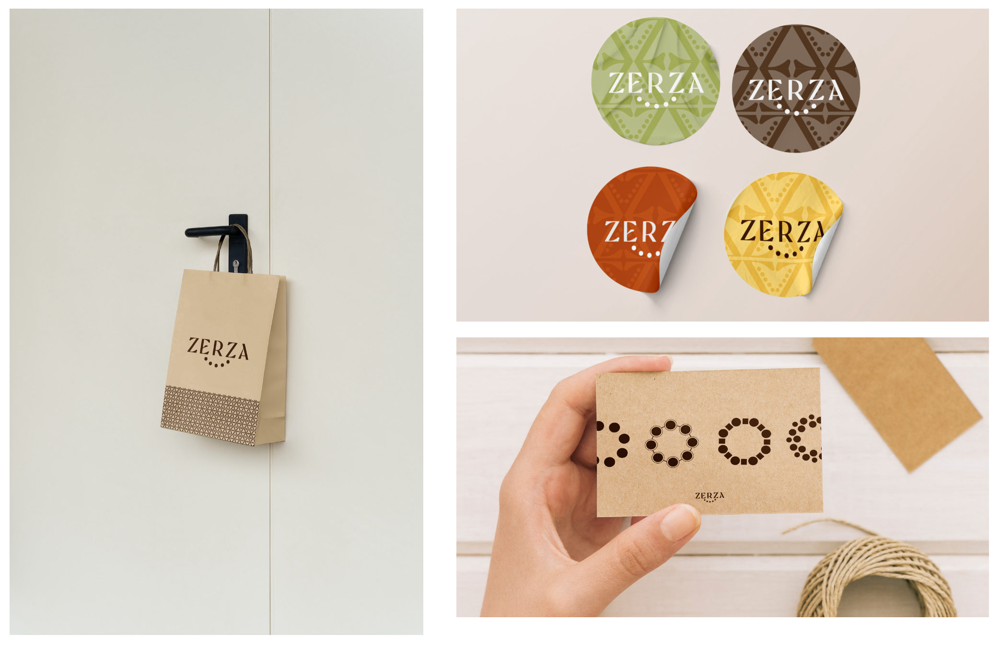

For this rebranding project, I had the privilege of collaborating with Zerza, a handmade jewellery brand founded by Gilberto Valério. The rebranding process focused on capturing the essence of the brand, which intertwines Gilberto's beliefs with his passion for continuous learning. Each piece, crafted from semi-precious stones such as tiger's eye, volcanic rock, and onyx, is a unique reflection of Gilberto’s artistry, imbued with personal meaning and energy. The refreshed brand identity underscores values of authenticity and creativity, positioning Zerza as more than just a jewellery brand; it offers clients a personal talisman, a piece of art that resonates with their own stories and intentions. This project exemplifies the significance of individuality and emotional connection in jewellery design, inviting clients to establish their own profound relationships with each creation.
    